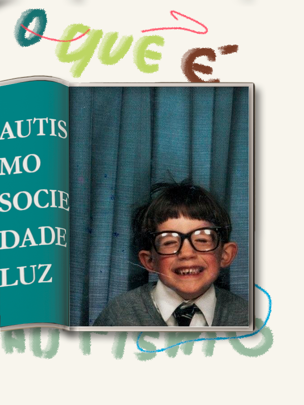

Transtorno do Espectro Autista (TEA)
O TEA é um transtorno do desenvolvimento neurológico presente desde o nascimento ou início da infância, afetando a interação social, a comunicação e o comportamento. As manifestações incluem dificuldades na interação social, comunicação (verbal e não verbal) e comportamento repetitivo. Essas dificuldades variam em intensidade, o que caracteriza o transtorno como um espectro.
Tipos de TEA
- TEA Clássico: Caracteriza-se por isolamento social e dificuldade de comunicação, especialmente em níveis mais graves.
- TEA de Alto Desempenho: Indivíduos com habilidades superiores em algumas áreas (ex.: memória, atenção aos detalhes), mas ainda com dificuldades sociais.
- Distúrbio Global do Desenvolvimento sem Outra Especificação (DGD–SOE): Caracteriza-se por dificuldades em comunicação e interação, mas os sintomas não são graves o suficiente para se enquadrar em outras categorias do TEA.